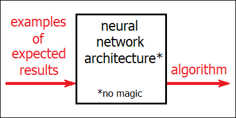

Not every algorithm is a neural network, but every neural network is an algorithm. Artificial neural networks are merely crunching numbers, there’s no “magic” in there. True magic comes from the fact that these algorithms aren’t written manually by humans. Every single step of the algorithm might be simple and well understood, but the entire picture becomes overly complex to be grasped by human conscious reasoning. These algorithms are also never perfect, by design. And every time you try to build one, even for the exact same problem, you’ll get a slightly different version of it. Artificial neural networks were inspired by human brain, but the way they actually work deviates significantly from their biological original.
In a certain sense, an artificial neural network isn’t actually a single algorithm, but rather a broad class of algorithms. In other words, it’s an algorithm with a large number of parameters. Depending on which parameters you choose, you get a different algorithm. By picking one set of parameters you might get an algorithm which is able to tell apart dogs from cats. Choose a slightly different set of parameters, and you’ll get an algorithm for distinguishing a Mercedes Benz from a BMW.
This broad class of algorithms is what we might call a “neural network architecture”. A simple architecture might only be able to come up with algorithms capable of telling apart two classes of pictures. Like dogs and cats. A more advanced architecture would be able to produce algorithms for classifying a picture simultaneously into 100 categories. Like 100 different breeds of dogs and cats (with one particular set of parameters), or 100 specific models of cars (with a slightly different set of parameters). The key objective in designing a neural network architecture is its flexibility. Which means that the total range of algorithms achievable, in theory, with this particular architecture (by picking up a suitable set of parameters) should be as large and as diverse as possible.
There can be no such thing as “universal neural network architecture” though. Some of them might only work with pictures (often of a particular size only). Others might only accept sound input, or only work with strings of text. Modern neural networks are actually much more robust, and can often work with any combination of these. They also boast a truly, truly large number of parameters, up to trillions of them. I don’t even want to think about how many different algorithms it’s possible to implement by picking different combinations of these parameters. And yet, the total range of algorithms implementable with any given architecture is always limited, regardless of its flexibility. In other words, there are always things which a given neural network just can’t do, however hard we try.
Once we have decided what type of an algorithm we might actually need, and selected an appropriate architecture based on these needs, the unknown parameters of the algorithm can be picked through a mathematical optimization process. Any algorithm, by definition, should take some input (like an image, for instance) and produce some output (which could even be a single number, for example “0” meaning “dog”, “1” meaning “cat”, and anything in between meaning that the algorithm isn’t exactly sure). The fitting of the parameters is done by preparing a large set of expected input-output pairs (which could be pictures of dogs and cats along with their correct classifications) and trying to find a set of parameters which would result in an algorithm producing reasonably similar results for every input.
This is not an easy task, I should say. And there is no perfect way of solving it. Still, we do have approximate methods which work remarkably well. It took our best scientists more than half a century to come up with these methods, but we do have them now. And as it’s usually the case with useful ideas, all these methods have therefore got high chances to remain alive long after their original creators are no longer there. The basic principle is that we have to write down the algorithm we’d like to discover in the form of a huge mathematical function, differentiable by every of the algorithm’s parameters. And then we apply this function to the expected input-output pairs and aim to minimize the difference, typically with the mathematical method of “gradient descent”. In order to implement this gradient descent method, we also have to compute this huge function’s derivatives by any of its parameters (the so-called “Jacobian matrix”), which, as it turned out, we can do with a certain kind of computational procedure, specific to artificial neural networks, which is called “backpropagation”.
This whole method, as it has already been mentioned, isn’t exactly perfect. In other words, it will never give us the best possible algorithm ever for the problem which we are trying to solve. We can get pretty amazing results, but there will always be “space” left for further improvements. Besides, it also turns out that every time we try repeating this entire procedure from scratch, we will actually end up discovering a slightly different algorithm, even if all the expected input-output pairs remain exactly the same. This happens because the methods mentioned above involve some randomness in the process. Unfortunately, our best scientists couldn’t come up with anything better than that.
Once this discovery process is finished though, the resulting algorithm is actually perfectly deterministic (unless we tweak it manually afterwards, which we sometimes do, especially with large language models). If it were an algorithm for telling apart dogs from cats, we should then be able to apply this algorithm to any image (of a suitable size) and get the output (a single number in this case) as a result. If everything was done correctly, this algorithm would then be able to correctly classify not only the example images we trained it on, but also totally unfamiliar pictures of dogs and cats (by producing numbers close to 0 for pictures of dogs, numbers close to 1 for pictures of cats, and some other random numbers for pictures which are neither cats nor dogs).
Nowhere in this entire process of training the algorithm and running it after the training is complete there’s anything which might remotely look like magic. Our artificial neural networks are doing nothing else but crunching numbers (a lot of them). If we wanted, we could write all the numerous steps performed by such an algorithm down on a sufficiently large sheet of paper. And we could even, in theory, perform all these steps manually, and get exactly the same result every time, for any given input. The only problem is that this clearly and unambiguously formulated list of instructions wouldn’t necessarily fit into our own head. In other words, our conscious reasoning wouldn’t typically be able to make sense of this algorithm. And in this particular sense, we don’t really understand what our artificial neural networks are doing.
We know that they should somehow mimic the inner workings of our brain. In fact, one of the reasons why scientists built artificial neural networks in the first place was their desire to better understand ourselves. They noticed that our nerve cells (the neurons) have modifiable parameters too. These parameters are the strengths of the so-called “synaptic connections” between the neurons. And it turns out that by choosing some appropriate values for these parameters it’s actually possible to “tweak” our biological brain circuits too. Connections between our biological neurons are known to be responsible for things like our long-term memories, most of our skills and even, to some extent, our moral values and certain character traits.
We still don’t fully understand how our biological brain circuits update their synaptic connections. And if you have a weird feeling that all those training methods mentioned above, including the calculations of derivatives by trillions of parameters and the gradient descent, aren’t what our brain is capable of doing, you are actually right. Our brain can’t do these things in this exact fashion. We might guess that it must probably be doing something similar though, albeit in a less efficient way, as it doesn’t have, unlike our digital computers, any of these highly powerful math functions built in.
Artificial neural networks don’t have any living cells inside them anymore. Large groups of similarly functioning neurons have been replaced by long sequences of numbers (also called “vectors”) representing the internal states of these neurons. Whereas connections between neurons have been modeled by matrices: huge tables of numbers, whose elements ultimately become the neural network’s parameters. The inner workings of the neurons, on the other hand, are imitated with the help of rather simple non-linear functions. And even though each of these building blocks itself remains deceptively simple, combining them all together in an appropriate way allows to create something remarkably powerful: a highly complicated algorithm discoverable from its expected input-output pairs alone by means of a fully automated procedure.
Artificial neural networks were inspired, in part, by our need to understand ourselves. Inadvertently however, we have created something which works in many aspects differently from its original biological inspiration, and in many aspects more efficiently too. And in spite of all that progress, we are still struggling to understand ourselves.
